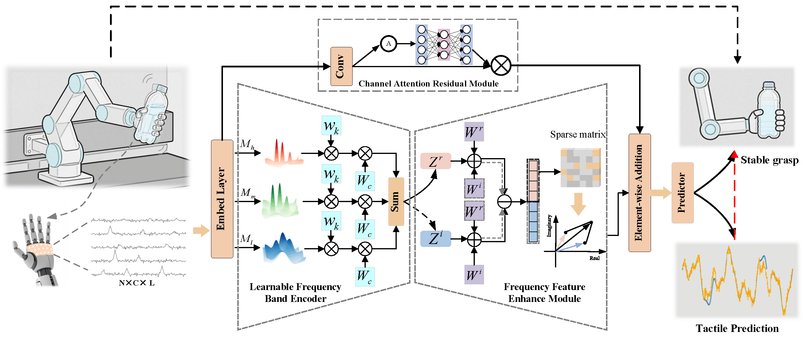

Slip prediction is critical for stable dexterous grasping, yet tactile signals are noisy and evolve rapidly during contact. This paper presents FTFNet, a frequency–time fusion network that jointly models frequency-domain and time-domain tactile features for slip prediction in dexterous robotic manipulation. By fusing complementary representations, FTFNet captures both transient slip cues and longer temporal trends, supporting more reliable grasp adjustment under changing contact conditions.

@article{li2026ftfnet,
title = {FTFNet: A Frequency--Time Fusion Network for Slip Prediction in Dexterous Robotic Manipulation},
author = {Li, Xingyu and Luo, Yijie and Wang, Wei and Xie, Qian and Wang, Zhipeng and Wang, Zhongjie and Zhou, Yanmin and He, Bin},
journal = {IEEE/ASME Transactions on Mechatronics},
year = {2026},
doi = {10.1109/tmech.2026.3676123}
}